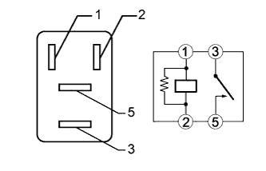
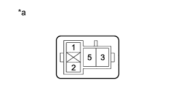
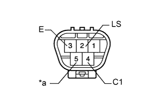
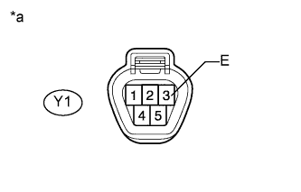

СИСТЕМА СТЕКЛООЧИСТИТЕЛЕЙ И СТЕКЛООМЫВАТЕЛЕЙ > Задний стеклоочиститель не работает |
| 1.СНИМИТЕ ПОКАЗАНИЯ ПОРТАТИВНОГО ДИАГНОСТИЧЕСКОГО ПРИБОРА (ВЫКЛЮЧАТЕЛЬ ОСВЕЩЕНИЯ ПРОЕМА ЗАДНЕГО СТЕКЛА) |
Проверьте в режиме Data List, что механизм открывания заднего стекла работает нормально (Нажмите здесь).
| Информация на дисплее прибора | Измеряемая величина / диапазон измерения | Нормальное состояние | Замечание по диагностике |
| Glass Hatch Courtesy Switch | Сигнал выключателя освещения проема заднего стекла / ON (ВКЛ) или OFF (ВЫКЛ) | ON (ВКЛ): Проем заднего стекла открыт OFF (ВЫКЛ): Проем заднего стекла открыт | - |
|
| ||||
| OK | |
| 2.ВЫПОЛНИТЕ АКТИВНУЮ ДИАГНОСТИКУ С ИСПОЛЬЗОВАНИЕМ ПОРТАТИВНОГО ДИАГНОСТИЧЕСКОГО ПРИБОРА (ДЛЯ ЭЛЕКТРОДВИГАТЕЛЯ ЗАДНЕГО СТЕКЛООЧИСТИТЕЛЯ) |
Выполните диагностику в режиме Active Test с помощью портативного диагностического прибора (Нажмите здесь).
| Информация на дисплее прибора | Испытываемое устройство | Диапазон регулирования | Замечание по диагностике |
| Rear Wiper Power Supply | Работа реле WASHER RR | ON (ВКЛ) / OFF (ВЫКЛ) | - |
|
| ||||
| OK | ||
| ||
| 3.ПРОВЕРЬТЕ РЕЛЕ WASHER RR |
|  |
Извлеките реле WASHER RR из блока реле, распределительного блока моторного отсека.
Измерьте сопротивление в соответствии со значениями, приведенными в таблице ниже.
| Контакты для подключения диагностического прибора | Состояние | Заданные условия |
| 3 - 5 | Напряжение аккумуляторной батареи не подается на контакты 1 и 2 | 10 кОм или более |
| Напряжение аккумуляторной батареи подается на контакты 1 и 2 | Менее 1 Ом |
|
| ||||
| OK | |
| 4.ПРОВЕРЬТЕ ЖГУТ ПРОВОДОВ И РАЗЪЕМ (РЕЛЕ WASHER RR - АККУМУЛЯТОРНАЯ БАТАРЕЯ) |
|  |
Извлеките реле WASHER RR из блока реле, распределительного блока моторного отсека.
Измерьте напряжение в соответствии со значениями, приведенными в таблице.
| Контакты для подключения диагностического прибора | Положение переключателя | Заданные условия |
| Контакт 2 реле WASHER RR - масса | Зажигание включено | 11-14 В |
| Контакт 2 реле WASHER RR - масса | Замок зажигания в положении OFF (ВЫКЛ) | Менее 1 В |
| Контакт 5 реле WASHER RR - масса | Всегда | 11 – 14 В |
| Контакт 5 реле WASHER RR - масса | Всегда | Менее 1 В |
| *a | Вид спереди разъема со стороны жгута проводов: (к реле WASHER RR) |
|
| ||||
| OK | |
| 5.ПРОВЕРЬТЕ ЖГУТ ПРОВОДОВ И РАЗЪЕМ (ГЛАВНЫЙ ЭБУ КУЗОВА - РЕЛЕ WASHER RR И МАССА) |
Извлеките реле WASHER RR из блока реле, распределительного блока моторного отсека.
Снимите главный ЭБУ кузова (Нажмите здесь).
Измерьте сопротивление в соответствии со значениями, приведенными в таблице ниже.
| Контакты для подключения диагностического прибора | Состояние | Заданные условия |
| G63-20 (RWMR) - контакт 1 реле WASHER RR | Всегда | Менее 1 Ом |
| A-11 (GND1) - масса | Всегда | Менее 1 Ом |
| G63-20 (RWMR) - масса | Всегда | 10 кОм или более |
|
| ||||
| OK | |
| 6.ПРОВЕРЬТЕ ЖГУТ ПРОВОДОВ И РАЗЪЕМ (РЕЛЕ WASHER RR - ЭЛЕКТРОДВИГАТЕЛЬ ЗАДНЕГО СТЕКЛООЧИСТИТЕЛЯ) |
Отсоедините разъем Y1 электродвигателя заднего стеклоочистителя.
Извлеките реле WASHER RR из блока реле, распределительного блока моторного отсека.
Измерьте сопротивление в соответствии со значениями, приведенными в таблице ниже.
| Контакты для подключения диагностического прибора | Состояние | Заданные условия |
| Y1-5 (+B) - контакт 3 реле WASHER RR | Всегда | Менее 1 Ом |
| Y1-5 (+B) - масса | Всегда | 10 кОм или более |
|
| ||||
| OK | |
| 7.ПРОВЕРЬТЕ ЭЛЕКТРОДВИГАТЕЛЬ ЗАДНЕГО СТЕКЛООЧИСТИТЕЛЯ В СБОРЕ |
|  |
Снимите электродвигатель заднего стеклоочистителя (Нажмите здесь ).
Проверьте, что электродвигатель заднего стеклоочистителя работает при подаче напряжения аккумуляторной батареи на контакты.
| Контакты для подключения диагностического прибора | Заданные условия |
| Положительный (+) вывод аккумуляторной батареи → 5 (+B) Отрицательный (-) вывод аккумуляторной батареи → 2 (LS) Отрицательный (-) вывод аккумуляторной батареи → 3 (E) | Электродвигатель работает на низких оборотах (LO) |
| Положительный (+) вывод аккумуляторной батареи → 5 (+B) Отрицательный (-) вывод аккумуляторной батареи → 4 (C1) Отрицательный (-) вывод аккумуляторной батареи → 3 (E) | Электродвигатель заднего стеклоочистителя работает прерывисто |
|
| ||||
| OK | |
| 8.ПРОВЕРЬТЕ ЖГУТ ПРОВОДОВ И РАЗЪЕМ (ЭЛЕКТРОДВИГАТЕЛЬ ЗАДНЕГО СТЕКЛООЧИСТИТЕЛЯ - МАССА) |
|  |
Отсоедините разъем Y1 электродвигателя заднего стеклоочистителя.
Измерьте сопротивление в соответствии со значениями, приведенными в таблице ниже.
| Контакты для подключения диагностического прибора | Состояние | Заданные условия |
| Y1-3 (E) - масса | Всегда | Менее 1 Ом |
| *a | Вид спереди разъема со стороны жгута проводов: (к электродвигателю заднего стеклоочистителя) |
|
| ||||
| OK | |
| 9.ПРОВЕРЬТЕ ПЕРЕКЛЮЧАТЕЛЬ СТЕКЛООЧИСТИТЕЛЯ ВЕТРОВОГО СТЕКЛА В СБОРЕ |
Снимите разъем переключателя стеклоочистителя ветрового стекла (Нажмите здесь).
Измерьте сопротивление в соответствии со значениями, приведенными в таблице ниже.
| Контакты для подключения диагностического прибора | Положение переключателя | Заданные условия |
| 16 (C1R) - 9 (EW) | OFF (ВЫКЛ) | 10 кОм или более |
| 18 (+1R) - 9 (EW) | OFF (ВЫКЛ) | 10 кОм или более |
| 16 (C1R) - 9 (EW) | LO | Менее 1 Ом |
| 18 (+1R) - 9 (EW) | HI | Менее 1 Ом |
| Контакты для подключения диагностического прибора | Положение переключателя | Заданные условия |
| B-5 (C1R) - B-2 (EW) | OFF (ВЫКЛ) | 10 кОм или более |
| B-4 (+1R) - B-2 (EW) | OFF (ВЫКЛ) | 10 кОм или более |
| B-5 (C1R) - B-2 (EW) | LO | Менее 1 Ом |
| B-4 (+1R) - B-2 (EW) | HI | Менее 1 Ом |
| Контакты для подключения диагностического прибора | Положение переключателя | Заданные условия |
| 12 (C1R) - 1 (EW) | OFF (ВЫКЛ) | 10 кОм или более |
| 10 (+1R) - 1 (EW) | OFF (ВЫКЛ) | 10 кОм или более |
| 12 (C1R) - 1 (EW) | LO | Менее 1 Ом |
| 10 (+1R) - 1 (EW) | HI | Менее 1 Ом |
| Контакты для подключения диагностического прибора | Положение переключателя | Заданные условия |
| B-6 (C1R) - B-2 (EW) | OFF (ВЫКЛ) | 10 кОм или более |
| B-7 (+1R) - B-2 (EW) | OFF (ВЫКЛ) | 10 кОм или более |
| B-6 (C1R) - B-2 (EW) | LO | Менее 1 Ом |
| B-7 (+1R) - B-2 (EW) | HI | Менее 1 Ом |
| *A | для моделей с выключателем стеклоочистителя ветрового стекла с левой стороны |
| *B | для моделей с выключателем стеклоочистителя ветрового стекла с правой стороны |
| *C | для моделей с автоматическими стеклоочистителями |
| *D | для моделей без автоматических стеклоочистителей |
|
| ||||
| OK | |
| 10.ПРОВЕРЬТЕ ЖГУТ ПРОВОДОВ И РАЗЪЕМ (ПЕРЕКЛЮЧАТЕЛЬ СТЕКЛООЧИСТИТЕЛЯ ВЕТРОВОГО СТЕКЛА - ЭЛЕКТРОДВИГАТЕЛЬ ЗАДНЕГО СТЕКЛООЧИСТИТЕЛЯ И МАССА) |
для моделей с переключателем стеклоочистителя ветрового стекла с левой стороны:
Отсоедините разъем Y1 электродвигателя заднего стеклоочистителя.
Отсоедините разъем G120 или G43 переключателя стеклоочистителя ветрового стекла.
Измерьте сопротивление в соответствии со значениями, приведенными в таблице ниже.
| Контакты для подключения диагностического прибора | Состояние | Заданные условия |
| Y1-2 (LS) - G120-18 (+1R) | Всегда | Менее 1 Ом |
| Y1-4 (C1) - G120-16 (C1R) | Всегда | Менее 1 Ом |
| G120-9 (EW) - масса | Всегда | Менее 1 Ом |
| Y1-2 (LS) - масса | Всегда | 10 кОм или более |
| Y1-4 (C1) - масса | Всегда | 10 кОм или более |
| Контакты для подключения диагностического прибора | Состояние | Заданные условия |
| Y1-2 (LS) - G43-4 (+1R) | Всегда | Менее 1 Ом |
| Y1-4 (C1) - G43-5 (C1R) | Всегда | Менее 1 Ом |
| G43-2 (EW) - масса | Всегда | Менее 1 Ом |
| Y1-2 (LS) - масса | Всегда | 10 кОм или более |
| Y1-4 (C1) - масса | Всегда | 10 кОм или более |
для моделей с выключателем стеклоочистителя ветрового стекла с правой стороны:
Отсоедините разъем Y1 электродвигателя заднего стеклоочистителя.
Отсоедините разъем G120 или G43 переключателя стеклоочистителя ветрового стекла.
Измерьте сопротивление в соответствии со значениями, приведенными в таблице ниже.
| Контакты для подключения диагностического прибора | Состояние | Заданные условия |
| Y1-2 (LS) - G120-10 (+1R) | Всегда | Менее 1 Ом |
| Y1-4 (C1) - G120-12 (C1R) | Всегда | Менее 1 Ом |
| G120-1 (EW) - масса | Всегда | Менее 1 Ом |
| Y1-2 (LS) - масса | Всегда | 10 кОм или более |
| Y1-4 (C1) - масса | Всегда | 10 кОм или более |
| Контакты для подключения диагностического прибора | Состояние | Заданные условия |
| Y1-2 (LS) - G43-7 (+1R) | Всегда | Менее 1 Ом |
| Y1-4 (C1) - G43-6 (C1R) | Всегда | Менее 1 Ом |
| G43-2 (EW) - масса | Всегда | Менее 1 Ом |
| Y1-2 (LS) - масса | Всегда | 10 кОм или более |
| Y1-4 (C1) - масса | Всегда | 10 кОм или более |
|
| ||||
| OK | ||
| ||